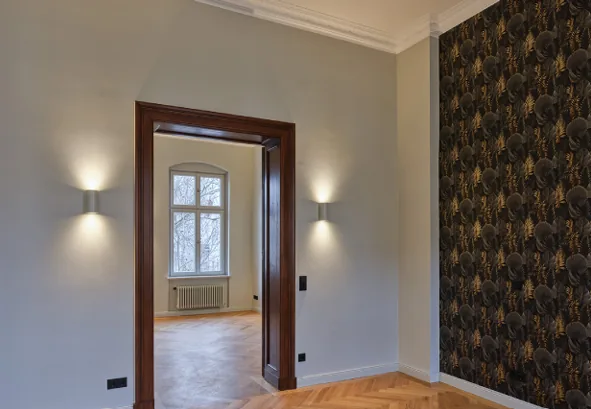
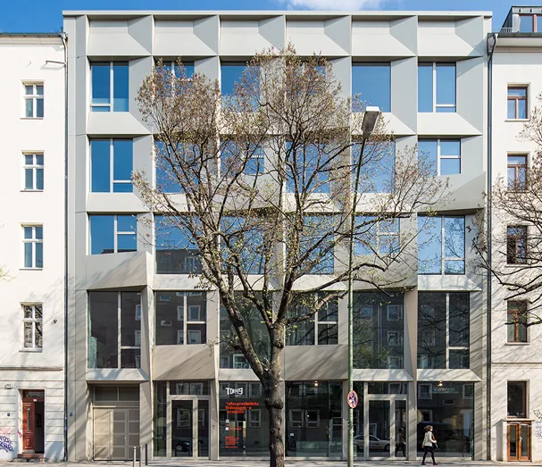

Planungsleistungen für Umbau, Anbau und Neubau in Berlin
Architektonische Planung für private und gewerbliche Bauvorhaben: vom Entwurf über die Grundrissplanung bis zur Begleitung auf der Baustelle, mit einem festen Ansprechpartner.
Umbau & Sanierung
Sie möchten Ihre Wohnung oder Ihr Haus im Bestand umbauen, modernisieren oder energetisch fit für die Zukunft machen? Wir planen den Umbau vom Aufmaß bis zum fertigen Entwurf – mit Blick darauf, was die vorhandene Substanz hergibt und was wirtschaftlich sinnvoll ist.
Von der energetischen Modernisierung über neue Grundrisse bis zur behutsamen Aufwertung: Wir entwickeln eine Planung, die zu Ihrem Vorhaben und Ihrem Budget passt – Schritt für Schritt, auch im bewohnten Zustand.
Altbausanierung, Energetische Modernisierung, Umbauplanung, Bauen im Bestand, Aufmaß & Entwurf

Anbau, Aufstockung & Dachausbau
Mehr Platz, ohne neu zu bauen: Anbau, Aufstockung und Dachausbau schaffen zusätzlichen Wohnraum dort, wo Sie schon leben. Wir prüfen, was baulich und planungsrechtlich möglich ist, und übersetzen das in einen tragfähigen Entwurf.
Ob ausgebautes Dachgeschoss, aufgesetztes Staffelgeschoss oder ein Anbau im Garten – wir planen den Zugewinn so, dass er sich selbstverständlich in das bestehende Gebäude einfügt.
Anbau, Aufstockung, Dachausbau, Staffelgeschoss, Machbarkeitsprüfung

Innenausbau & Umnutzung
Ein neuer Grundriss, ein durchdachtes Raumkonzept, eine andere Nutzung: Beim Innenausbau planen wir Räume so, dass sie zu Ihrem Alltag passen – von der Wohnung bis zur Gewerbe- oder Praxisfläche.
Wir begleiten die Umnutzung bestehender Flächen, entwickeln Grundriss und Raumaufteilung und stimmen Material, Licht und Details aufeinander ab.
Innenausbau, Grundrissplanung, Raumkonzept, Umnutzung, Praxis- & Gewerbeflächen

Neubau
Sie planen ein eigenes Haus? Wir entwerfen und planen Neubauten – vom Einfamilienhaus über das Doppelhaus bis zum Mehrfamilienhaus. Von der ersten Skizze über den Entwurf bis zur ausführungsreifen Planung bleiben wir Ihr fester Ansprechpartner.
Uns geht es um Architektur mit Substanz: klare Grundrisse, gutes Tageslicht, dauerhafte Materialien und eine Planung, die zu Grundstück, Nachbarschaft und Budget passt.
Neubau, Einfamilienhaus, Doppelhaus, Mehrfamilienhaus

Ein Projekt in fünf Schritten
Von der ersten Idee bis auf die Baustelle begleiten wir Ihr Projekt mit einem festen Ansprechpartner. Die Schritte folgen den Leistungsphasen der HOAI.
- 1. Erstgespräch & Idee
Wir hören zu, klären Ihr Vorhaben, sehen uns Ort und Bestand an und ordnen ein, was möglich ist.
Leistungsphase 1 - 2. Entwurf & Grundriss
Aus Ihren Wünschen entwickeln wir einen Entwurf mit tragfähigem Grundriss und ersten Kostengrößen.
Leistungsphasen 2 und 3 - 3. Genehmigungsplanung
Die Unterlagen für den Bauantrag erstellen wir gemeinsam mit bauvorlageberechtigten Partner:innen aus unserem Netzwerk und stimmen die notwendigen Nachweise ab.
Leistungsphase 4 - 4. Ausführungsplanung
Details, Maße und Materialien werden bis zur ausführungsreifen Planung durchgearbeitet.
Leistungsphase 5 - 5. Begleitung der Umsetzung
Wir begleiten die Umsetzung auf der Baustelle, behalten Qualität und Termine im Blick und bleiben Ihr Ansprechpartner.
Baustelle
Fragen zu Leistungen und Ablauf
Neun Antworten zu Verfahren, Leistungsphasen und Zusammenarbeit.
Was ist der Unterschied zwischen Anbau, Aufstockung und Dachausbau?
Ein Anbau erweitert das Gebäude in der Fläche, zum Beispiel zum Garten hin. Eine Aufstockung setzt ein zusätzliches Geschoss auf das bestehende Haus. Beim Dachausbau wird ein vorhandener Dachraum zu Wohnraum, meist innerhalb der bestehenden Dachform. Welche Lösung passt, hängt von Grundstück, Statik und Baurecht ab.
Brauche ich für einen Umbau in Berlin eine Baugenehmigung?
Das hängt vom Vorhaben ab. Änderungen im Inneren ohne Eingriff in tragende Bauteile sind oft ohne Verfahren möglich. Anbauten, Aufstockungen, Eingriffe in die Statik, Nutzungsänderungen und Änderungen an der Fassade sind in der Regel bei der Bauaufsicht des Bezirks zu beantragen oder anzuzeigen. Die Bauordnung für Berlin wurde 2024 und 2026 mehrfach geändert. Wir klären deshalb zu Beginn, welches Verfahren für Ihr Vorhaben gilt.
Was sind die Leistungsphasen der HOAI?
Die Honorarordnung für Architekten und Ingenieure (HOAI) gliedert die Planung eines Gebäudes in neun Leistungsphasen: 1 Grundlagenermittlung, 2 Vorplanung, 3 Entwurfsplanung, 4 Genehmigungsplanung, 5 Ausführungsplanung, 6 Vorbereitung der Vergabe, 7 Mitwirkung bei der Vergabe, 8 Objektüberwachung (Bauüberwachung) und 9 Objektbetreuung. Die Phasen lassen sich einzeln oder im Paket beauftragen.
Kann ich während der Sanierung in meiner Wohnung bleiben?
Häufig ja. Wir planen Umbau und Sanierung Schritt für Schritt, auch im bewohnten Zustand. Ob das sinnvoll ist, hängt vom Umfang der Arbeiten ab, etwa bei Bädern, Leitungen oder Eingriffen in die Decken.
Planen Sie auch Gewerbe- und Praxisflächen?
Ja. Beim Innenausbau und bei Umnutzungen planen wir neben Wohnungen auch Büro-, Gewerbe- und Praxisflächen, einschließlich Grundriss, Raumaufteilung, Material und Licht.
Für wen plant Sinke Planung?
Für private und gewerbliche Bauherr:innen in Berlin: Eigentümer:innen von Wohnungen und Häusern, Familien, die mehr Platz brauchen, sowie Betriebe und Praxen, die Flächen umbauen oder umnutzen möchten.
Wie läuft ein Projekt mit Sinke Planung ab?
In fünf Schritten: Erstgespräch und Besichtigung, Entwurf und Grundriss mit ersten Kostengrößen, Genehmigungsplanung, Ausführungsplanung und Begleitung der Umsetzung auf der Baustelle. Den Ablauf im Einzelnen finden Sie bei den Leistungen.
Welche Erfahrung bringen Sie mit?
Über 20 Jahre in Architektur und Planung. In leitender Rolle haben wir in unserer bisherigen Tätigkeit über 2.000 Wohneinheiten sowie Schulen und Gewerbebauten in Berlin verantwortet. Diese Erfahrung bringen wir heute persönlich in Ihr Vorhaben ein.
Wie schnell erhalte ich eine Antwort auf meine Anfrage?
Wir melden uns innerhalb weniger Tage. Am schnellsten geht es über das Kontaktformular mit ein paar Angaben zu Standort, Größenordnung und geplantem Zeitrahmen.